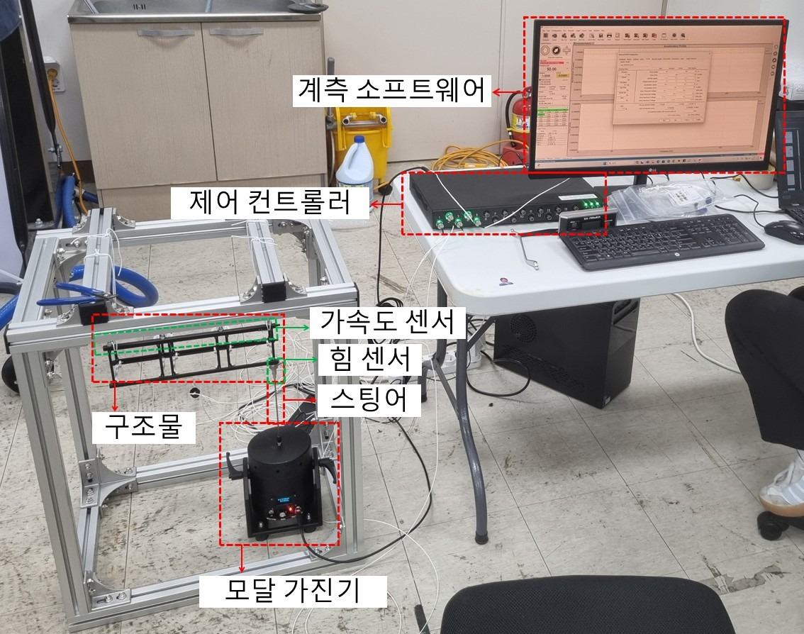

Embedded & Control
MCU 기반 센서 인터페이스와 저수준 통신, 실시간 모터·자세 제어기를 구현합니다.
- C/C++ · STM32 · Zybo · Teensy · ESP32
- Raspberry Pi · Arduino
- UART · I²C · SSI · GPIO · CAN
- Cascade · Feedforward · Filtering
01 / ABOUT
센서 통신과 제어기를 구현하고, 실기체·시뮬레이션에서 동작을 확인했습니다. 오동작이 발생하면 센서 입력부터 제어 출력까지 로그를 대조해 원인을 찾았습니다.
MCU 기반 센서 인터페이스와 저수준 통신, 실시간 모터·자세 제어기를 구현합니다.
엣지 컴퓨팅 보드와 센서, 펌웨어를 연결해 실제 기체에서 동작하는 시스템을 만듭니다.
계측 데이터를 분석해 오차 원인을 찾고, 조건별 성능을 비교합니다.
02 / SELECTED WORK
각 프로젝트에서 맡은 역할과 해결한 문제, 시험 결과를 정리했습니다.
전장 · 펌웨어 · 제어
전원·회로부와 방수 배선을 설계하고, Raspberry Pi–Teensy 통신과 GPIO 기반 엔코더 SSI 통신을 직접 구현했습니다. 모터 토크와 DAQ로 측정한 소비 전류를 바탕으로 구동계와 방수 커넥터·케이블을 선정하고 침수 센서를 통합했습니다. 피드포워드를 결합한 P–PID 제어와 MATLAB GUI를 구현해 엔코더 피드백 기반 구동, 상태 점검·파라미터 조정·시험을 수행했습니다.
VIO · 디버깅 · 비행 검증
영상 특징점 수로 암전을 감지하고, OptiTrack·Gazebo 위치로 전환한 뒤 복구된 VIO 궤적을 정렬했습니다. 7초 암전에서 ATE RMSE가 RC카 실험 0.9121 → 0.1346 m, 드론 시뮬레이션 0.8613 → 0.3024 m로 감소했습니다. 외부 위치를 참값과 대체 입력으로 사용한 개념 검증입니다.
자세히 보기 ↗팀장 · GNSS–VIO 최적화 · 시스템 통합
6개 VIO의 궤적 정확도와 CPU·메모리 사용량을 비교해 Basalt를 선정하고, GNSS와 결합하는 Ceres 포즈 최적화기를 구현했습니다. 200.5 m 순환 데이터의 모사 GNSS σ = 0.5 m 조건에서 수평 ATE RMSE가 0.435 → 0.178 m로 감소했습니다. 의미분할 모델을 파인튜닝하고, 위치추정·인지 출력을 팀원의 경로생성·제어 모듈과 통합했습니다.
자세히 보기 ↗
모달 시험 · FRF 분석 · 시각화
3U 큐브위성 구조체의 진동 특성을 확인하기 위해 가진기·힘 센서·8채널 가속도계로 시험 환경을 구성했습니다. 계측한 FRF에 Peak Picking과 LSCE를 적용해 고유진동수와 감쇠비를 추정하고, MATLAB으로 모드 형상을 시각화했습니다.
자세히 보기 ↗
팀장 · 통합 환경 · 유도 제어
DAVE 기반 수중 환경을 통합하고, 4-fin 위협 어뢰의 모델링과 PP·PNG 유도 제어를 담당했습니다. 센서 데이터 경로와 제어 주기의 대기 방식을 개선해 최대 상태 수신 간격을 330 → 12 ms로, 제어 노드 CPU 사용률을 102.7 → 2.4%로 낮췄습니다. 이후 ESP32·CAN 기반 Controller-HILS로 확장했습니다.
F1TENTH 차량의 2D LiDAR SLAM 위치추정을 맡았습니다. 저속·고속 주행과 센서 조건별 ROS bag을 비교해 스캔 매칭과 루프 클로징을 조정하고, VESC의 ERPM을 차량 상태 확인에 연동했습니다.
자세히 보기 ↗마찰전기 센서의 입력을 Arduino로 계수하고 차동 데이터와 발생 시각을 SD 카드에 저장한 뒤, Bluetooth로 App Inventor 앱에 전달해 기간별 교통량을 조회하는 시제품을 팀장으로 개발했습니다.
자세히 보기 ↗03 / SKILLS
프로젝트에서 사용한 기술과 도구입니다.
STM32 주변장치 제어와 비트 단위 데이터 처리, 센서 인터페이스 구현 경험
로봇 제어 노드·장비 인터페이스와 Ceres 포즈 잔차 구현, 객체지향 및 Strategy·Factory 패턴 적용
센서와 제어 노드 구성, 토픽 기반 데이터 연동, ROS-Gazebo Bridge와 다중 플랫폼 통합 환경 구축
약 2년간 CLI 중심으로 개발하며 패키지·권한·그래픽 관련 오류를 해결하고, 셸 스크립트로 반복 작업 자동화
ROS 기반 센서 연동과 SLAM, VIO 구동을 위해 Jetson 계열 보드에 개발 환경을 구성하고 실제 플랫폼에 적용
베어메탈 주변장치 제어와 FreeRTOS 태스크 구성, Critical Section과 Mutex를 활용한 공유 자원 보호 경험
실험 데이터 가공과 3차원 좌표 변환, 궤적과 오차 시각화, FRF와 모달 데이터 분석 및 시험용 GUI 제작
Gazebo 모델·물리 플러그인 수정과 ROS Bridge 연동, AirSim 센서·제어 환경 구성
CAD로 구조물을 3D 모델링하고, 3D 프린터 출력과 CNC 카본 플레이트 가공까지 연계
브랜치와 Pull Request 기반 협업, 일반 코드와 ROS 패키지 빌드 구성, 기초 Dockerfile 작성과 이미지 실행, 데이터 마운트
04 / CONTACT